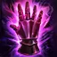
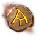
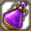
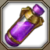
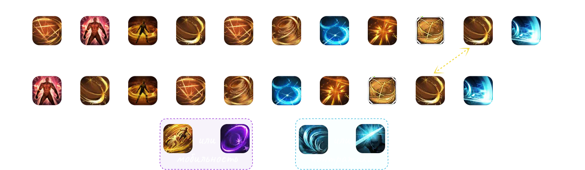

222 Ускоренный 🐆¶
Кому подходит: Тем, кому нужно что-то простое для старта, но сложное для освоения.
- Простая ротация, для понимания. Но тяжёлая в реализации.
- Множество иммунитетов к отбросу, а так же всегда есть запас стаков.
- Нуждается в малом количестве самоцветов.
- «Концентрация воли» и «Убийственная сталь» основа твоего урона.
Профиль билда
Код билда¶
9367EBEAC728B33EEA9F0AB083E6BE6C65E1FA8192C263D88A49CF29C51C1598079D410E09BDB31F452CB72724307A071C166B254B8F225F6AF4C515B236258B
Система А.Р.К.¶
СоветыСоветы по А.Р.К.
- Используй Калькулятор Созвездий А.Р.К., чтобы оптимизировать вкладку «Экспансию».
Гравировки¶
 Титаноборец
Титаноборец
 Адреналин
Адреналин
 Бесшумный убийца
Бесшумный убийца
 Неутомимый натиск
Неутомимый натиск
Подробнее о гравировках можно прочитать здесь!
Набор навыков¶
СоветыРуны
- Используй Солум на «Хитроумном финте/Двуручный хват», для снятия негативных эффектов.
- Используй Легендарный Марх на «Плаще клинков», если проблемы с маной.
АльтернативаВыбор мобильности и контртаки
Мобильность
Разрубающие лезвияУр. 10331 
Контртака Хитроумный финтУр. 41Ульд ИЛИ Двуручный хватУр. 10332Ульд
Самоцветы¶
Ротация¶
Применяй «Разрубающие лезвия» (или «Аксель», если берёшь альтернативу), чтобы гарантированно попасть в спину «Убийственной сталью» и «Концентрацией воли».
Используй Открытие (по желанию), затем чередуй Цикл 1 и 2 до конца боя.
Открытие
Открытие с запасом стаков — 68 стаков
Циклы
1Цикл со скипом «Внезапного выпада» — 61 стаков
2Цикл со скипом «Неумолимого притяжения» — 60 стаков
- Идеально чередование 1>2>1>2, но по паттернам босса допустимы и варианты вроде 1>2>2>1 или 1>1>2>2.
- Кажется сложнее, чем есть: посмотри это видео, чтобы увидеть полный цикл в деле.
С нуля сфер
- Рекомендуется использовать

Мощную «Эйфорию», но если ты жадный и ленивый, переходи к #2. - Сгенерируй одну сферу, набери минимум 40 стаков, затем примени «Концентрацию воли» — она вернёт все 3 сферы.
Применение «Ардопина-Х»
- Используй

Ардопин-Х прямо перед «Убийственной сталью» и умести две пары «Убийственная сталь» + «Концентрация воли» в 10 секунд.

Распределение Урона¶
Древние ядра, самоцветы полностью Ур. 10